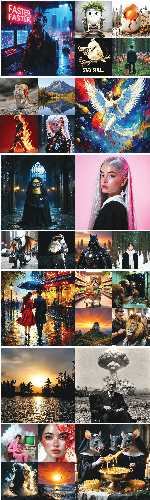
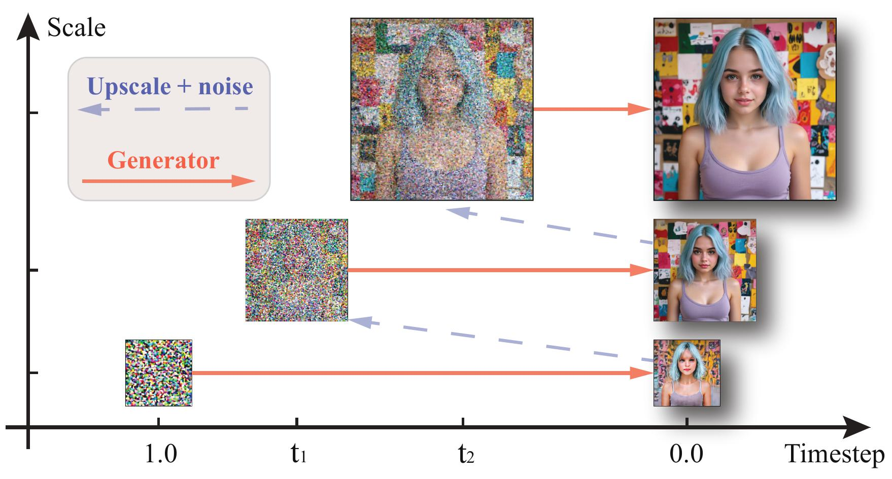
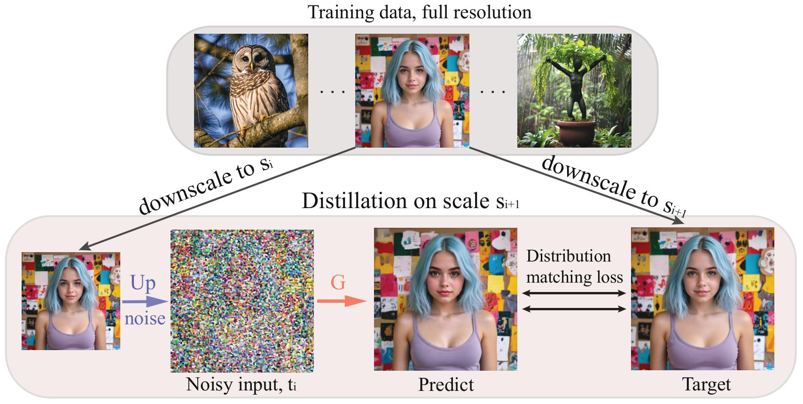
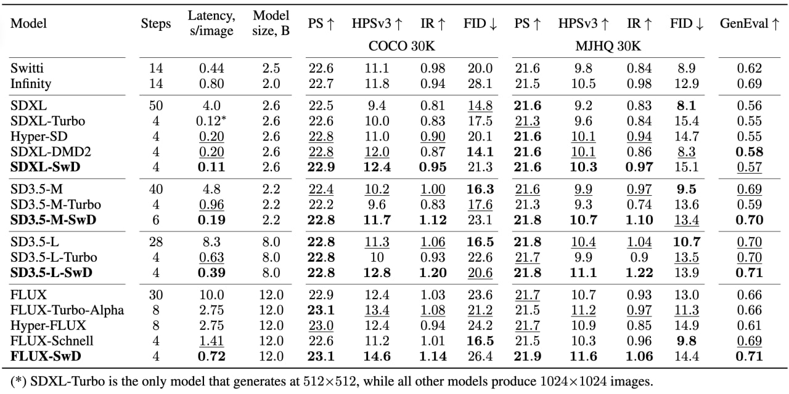
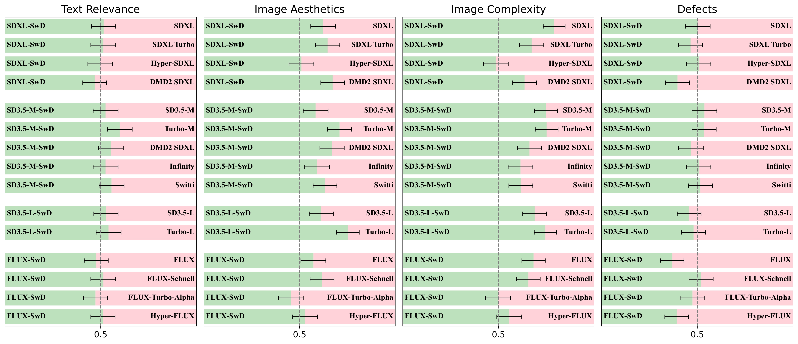

Recent diffusion distillation methods have achieved remarkable progress, enabling high-quality ~4-step sampling for large-scale text-conditional image and video diffusion models. However, further reducing the number of sampling steps becomes more and more challenging, suggesting that efficiency gains may be better mined along other model axes. Motivated by this perspective, we introduce SwD, a scale-wise diffusion distillation framework that equips few-step models with progressive generation, avoiding redundant computations at intermediate diffusion timesteps. Beyond efficiency, SwD enriches the family of distribution matching distillation approaches by introducing a simple patch-level distillation objective based on Maximum Mean Discrepancy (MMD). This objective significantly improves the convergence of existing distillation methods and performs surprisingly well in isolation, offering a competitive baseline for diffusion distillation. Applied to state-of-the-art text-to-image/video diffusion models, SwD approaches the sampling speed of two full-resolution steps and largely outperforms alternatives under the same compute budget, as evidenced by automatic metrics and human preference studies.
1. Scale-wise Distillation
We propose a pipeline that adapts pretrained diffusion models into progressive few-step models.
SwD training step. i) Sample a pair of adjacent resolutions [si, si+1] from scale schedule. ii) Downscale the training images to si and si+1. iii) The lower scale versions are upsampled and noised to a timestep ti with the forward process. iv) Given the noised images, the model G predicts clean data at target scale si+1. v) Distribution matching loss is calculated between predicted and target images. SwD sampling. Few-step model starts sampling from noise at the low resolution s1 and gradually increases it over generation steps. At each step, the previous denoised prediction at the scale si−1 is upsampled and noised according to the timestep schedule, ti. Then, the generator predicts a clean image at the current resolution si.The figures below visually demonstrate the SwD sampling and training procedures.

SwD sampling.

SwD training step.
We introduce a novel distillation objective based on Maximum Mean Discrepancy (MMD) that aligns patch-level distributions between generated and target images. The MMD is calculated on the intermediate spatial features of the pretrained diffusion models using a linear kernel (k(x, y) = xTy), which reduces the objective to MSE between spatial token means per image. The resulting loss is computationally efficient, requires no additional trainable models, and shows promising results even as a standalone distillation objective.

Quantitative comparison of SwD against other leading open-source models. Bold indicates the best-performing model within each DM group, while underline denotes the second best.

Human preference study for SwD against the baseline models
@inproceedings{
starodubcev2026scalewise,
title={Scale-wise Distillation of Diffusion Models},
author={Nikita Starodubcev and Ilya Drobyshevskiy and Denis Kuznedelev and Artem Babenko and Dmitry Baranchuk},
booktitle={The Fourteenth International Conference on Learning Representations},
year={2026},
url={https://openreview.net/forum?id=Z06LNjqU1g}
}